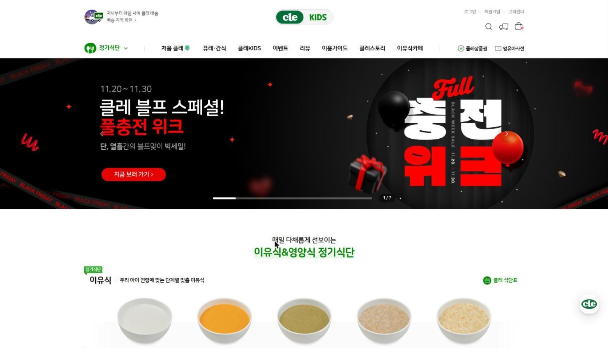

푸드케어 CLE 레거시 이관과 일정 배송Foodcare CLE: legacy migration and scheduled delivery
포비즈코리아Forbiz Korea
10년 넘게 쌓인 레거시 회원 약 30만 건을 새 플랫폼으로 옮기고, 아이 월령에 따라 매일 달라지는 이유식 일정 배송을 일자 × 상품 × 고객 구조로 만들었습니다.
I moved about 300,000 legacy member records, built up over 10+ years, to a new platform, and built scheduled baby food delivery, which changes daily with the child's age, as a date × product × customer structure.
- 문제Problem
- 이유식은 요일, 식단, 아이 월령에 따라 발송 일정이 매일 달라 일반 정기배송 모델로는 운영할 수 없었고, 레거시 데이터도 새 시스템으로 옮겨야 했습니다.Baby food ships on a schedule that changes daily with weekday, menu and the child's age, which a standard subscription model cannot run, and the legacy data had to move to the new system.
- 접근Approach
- 발송을 주문 단위가 아니라 일자 × 상품 × 고객 매트릭스로 관리하게 하고, 레거시 회원 데이터를 이관했습니다.I managed shipments as a date × product × customer matrix instead of per order, and migrated the legacy member data.
- 결과Result
- 레거시 회원 약 30만 건 이관, 일별 발송 관리 자동화.About 300,000 legacy members migrated; daily shipment handling automated.
- 역할Role
- 데이터 이관, 일정 배송Data migration, scheduled delivery
- 팀Team
- 개발자 3명3 developers
- 이관Migrated
- 회원 약 30만 건about 300,000 members
- 투입Allocation
- 30% (FOLDER MALL 병행)30% (alongside FOLDER MALL)

Service
유리병 이유식 브랜드 푸드케어 클레의 쇼핑몰입니다. 준비기부터 후기까지 아이의 월령에 맞춘 단계별 이유식과 유아식, 간식을 팔고, 정해진 식단을 주기적으로 받는 정기식단이 중심입니다. 회원의 주문 이력과 정기 배송 정보가 서비스의 핵심 데이터입니다.
The store of Foodcare CLE, a brand of baby food in glass jars. It sells stage-by-stage baby food from the first stage to the late stage, toddler meals and snacks, centered on a subscription meal plan delivered on a schedule. Members' order history and subscription delivery data are the core of the service.
What I did
- 레거시 회원 약 30만 건 이관About 300,000 legacy members migrated
- 10년 넘게 쌓인 기존 시스템의 회원 정보와 콘텐츠 데이터를 새 플랫폼으로 옮겼습니다. 레거시는 회원 테이블에 아이 정보가 컬럼으로 붙어 있었고 새 시스템은 회원 한 명에 아이 여러 명(1:N)이라, 아이 정보를 별도 테이블로 나눠 옮겼습니다. 비밀번호는 해시 방식이 달라 첫 로그인 때 새 방식으로 다시 저장했습니다. 이관 결과는 회원 수, 포인트 합계, 샘플 계정 로그인으로 대조했습니다.I moved member and content data built up over 10+ years in the old system to the new platform. The legacy member table held child details as columns, while the new system allows several children per member (1:N), so child data moved to its own table. Password hashing differed, so each password is re-hashed the new way on first login. I checked the result by matching member counts, point totals and sample logins.
- 이유식 일정 배송 (일자 × 상품 × 고객)Scheduled delivery (date × product × customer)
- 요일, 식단, 아이 월령에 따라 매일 달라지는 발송 일정을 주문 단위가 아니라 일자 × 상품 × 고객 매트릭스로 관리하는 구조로 구현했습니다. 발송은 Cron으로 돌려 운영팀이 손으로 하던 배송 관리를 자동화했습니다.I modeled shipments that change daily with weekday, menu and the child's age as a date × product × customer matrix rather than per order, and ran dispatch on cron, automating what the operations team had done by hand.
- Elasticsearch 검색 연동Elasticsearch search
- 이관한 콘텐츠를 Elasticsearch로 검색할 수 있게 연동했습니다.I connected the migrated content to Elasticsearch search.
- 주문 데이터 수집Order data collection
- 주문 데이터를 주문별, 결제수단별, 상품별로 모으는 기능을 개발해 운영자가 매출을 여러 기준으로 볼 수 있게 했습니다.I built collection of order data by order, by payment method and by product, so operators can look at sales from several angles.
- SNS 로그인과 공유Social login and sharing
- SNS 로그인과 공유 기능을 연동했습니다.I integrated social login and sharing.
- 게시판 관리와 이벤트Board management and events
- 커뮤니티 운영을 위한 게시판 관리 기능과 여러 이벤트 기능을 개발했습니다.I built board management for the community and several event features.
Result
레거시 회원 약 30만 건을 새 플랫폼으로 이관했고, 일반 이커머스에 없는 일별 스케줄 배송을 시스템으로 풀어 운영팀의 수작업을 줄였습니다.
About 300,000 legacy members moved to the new platform, and daily scheduled delivery, which standard e-commerce lacks, now runs in the system instead of by hand.